An ESP32-P4 sink¶
hearth_sink runs on the ESP32-P4 as the best of the sink family: the part with the room to
decode E-AC-3 7.1.4 with its tools on, and AC-4 to 5.1, in real time. It has one I2S controller
whose TDM frame holds 512 bits, which reaches sixteen 32-bit channels into both DACs of the
planned pair from one line, and, on a board with a panel, it draws the words of a karaoke song as
they are sung.
Status as of 2026-10-12: the v1.x board plays; the v3.x board and its panel have not arrived
The sink runs on a DFRobot FireBeetle 2 (chip revision v1.3), stereo, over Wi-Fi hosted on its onboard ESP32-C6. Nothing under "On the v3.x kit" has run on the v3.x chip or on a panel: the image for it is built by CI, and the screen is drawn and measured on a board with no panel, which says how much the drawing costs and not what the glass shows. The kit is on its way; planning/karaoke-p4x-panel.md has the plan and the list of what it runs first.
Pairing, groups and firmware updates work the same as on the S3; see An ESP32-S3 sink and Sink firmware. This page covers what differs on the P4.
Two chips, two images¶
The P4 has had two silicon generations, and their firmware images are not interchangeable (Espressif's v3.x user guide, section 1.1): an image for one refuses to start on the other. A release carries one for each.
| Chip revision v1.x | Chip revision v3.x ("P4X", v3.1 and newer) | |
|---|---|---|
| Image | hearth-sink-esp32p4-rev1 |
hearth-sink-esp32p4-rev3 |
| Example board | DFRobot FireBeetle 2 (v1.3) | ESP32-P4X-Function-EV-Board, 7-inch panel |
| CPU | 360 MHz (400 MHz asserts in its boot) | 400 MHz |
| I2S clock source | APLL, 125 MHz at most: no TDM above two channels | the 160 MHz PLL: TDM at the full 16 × 32 bits |
| Screen | none | the 7-inch 1024 by 600 panel, with touch |
| Verified | on a board | built by CI; not run on a board yet |
GET /hardware tells which a board is, and ota.py chooses the image from it, so a board updated
over its network gets the right one (Sink firmware).
Build and flash¶
From firmware/hearth-sink, in an ESP-IDF v6.1 terminal. A P4 is not built with set-target
and plain defaults: say the target and the overlays.
Chip revision v1.x (the FireBeetle 2, stereo, no screen):
idf.py -DIDF_TARGET=esp32p4 "-DSDKCONFIG_DEFAULTS=sdkconfig.defaults;sdkconfig.hw;sdkconfig.p4;sdkconfig.sendspin" build
idf.py -p PORT flash monitor
Chip revision v3.x with the 7-inch panel (the image CI publishes as hearth-sink-esp32p4-rev3):
idf.py -DIDF_TARGET=esp32p4 "-DSDKCONFIG_DEFAULTS=sdkconfig.defaults;sdkconfig.hw;sdkconfig.p4;sdkconfig.p4-rev3;sdkconfig.sendspin;sdkconfig.panel;sdkconfig.panel-dsi" build
A board with no panel, to see the screen (any P4; the picture is read back over HTTP, below):
idf.py -DIDF_TARGET=esp32p4 "-DSDKCONFIG_DEFAULTS=sdkconfig.defaults;sdkconfig.hw;sdkconfig.p4;sdkconfig.sendspin;sdkconfig.panel;sdkconfig.panel-null" build
| File | What it sets |
|---|---|
sdkconfig.p4 |
The P4 itself: the wide I2S sink, PSRAM, the code run from PSRAM, the Wi-Fi buffers and the DMA queue, with the reasons for each. Written for v1.x silicon |
sdkconfig.p4-rev3 |
After sdkconfig.p4: chip revisions v3.1 to v3.99, 400 MHz, and the bootloader at the Warn log level (a v3.x bootloader is 25,152 bytes at Info against the 24,576-byte window; 22,448 at Warn) |
sdkconfig.panel |
LVGL's heap in PSRAM, TrueType fonts, right-to-left text |
sdkconfig.panel-null / sdkconfig.panel-dsi |
The frame buffer with no panel, or the 7-inch MIPI DSI panel |
AC-4 is sdkconfig.ac4 after those (ESP32-P4 platform page).
On the v1.x board¶
It plays AC-3 and E-AC-3 onto 2.0 in a paired Sendspin session, and decodes AC-4 to 5.1 in real
time (ESP32-P4). TDM does not open above two channels on
this silicon: the controller has no PLL clock source before v3, and the audio PLL it falls back to
tops out at 125 MHz, short of the ~147 MHz a 512-bit frame needs at 48 kHz. That is a limit of the
chip, and GET /hardware says so on such a board.
Karaoke on the v1.x board¶
The board reproduces AC-3 and E-AC-3 karaoke itself at its 2.0 layout, which is the only one it
can open. Hearth's live karaoke cases at ICLFORGE_HEARTH_LIVE_KARAOKE_LAYOUT=2.0, on a v1.3 board
booted from its first slot on 2026-10-13, found the board's output levels within 0.2 dB of the
host's decode for AC-3 and within 0.7 dB for E-AC-3, for as coded, aware, and capable with a
vocal, with none, and with the melody and a vocal moved, with the layout, routing, trim, delay
and crossover settings pushed as well. At 2.0 the aware reproduction is the Lo/Ro fold as coded
already is, so the two read alike. The 3.0 layout the case uses by default needs three slots
and cannot open here; it is not measured on a v3.x chip.
One earlier run on the same image, started from the board's second slot straight after an update
restart, played nothing and logged burst player: a stream control message did not fit the ring
(the player's ring was not draining). It did not repeat in eight runs after a clean start from
the first slot, and its cause is not known.
On the v3.x kit¶
Not run on a v3.x chip or a panel
What follows is built from ESP-IDF's headers, the v3.x user guide and the vendor drivers' own values, and checked by compiling it. The first run on the kit confirms or corrects every line.
What changes for the audio¶
- 400 MHz, and PSRAM at 200 MHz by ESP-IDF's default for this chip. The decoders scale with the clock almost exactly, so the v1.3 board's timings are a floor.
- TDM should open: the
i2s_widesink takes the 160 MHz PLL (I2S_CLK_SRC_PLL_160M) as the clock source on this silicon, which the 16 × 32-bit frame needs (a 147 MHz source at least). The source is chosen when the image is built, because the two revisions are two images. Whether a frame that wide really leaves the pins at 24.576 MHz is the first thing the kit checks. - The DACs are not wired and no firmware programs an ES9080 over I2C: the board plays to a frame whose unused slots are zero, which is what the ES9080 contract is (sink tiers).
The screen¶
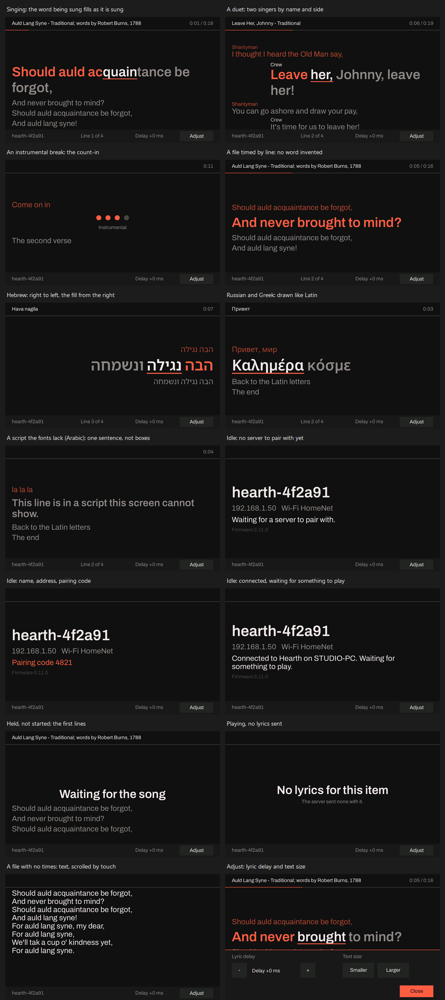
The board shows the lyrics of the item playing, against the sound the board is playing: the server sends the document and where in it the sound is, and the board follows on its own clock, which knows its own output delay. The same lyric file and the same karaoke stream Hearth plays on a desktop (Karaoke).
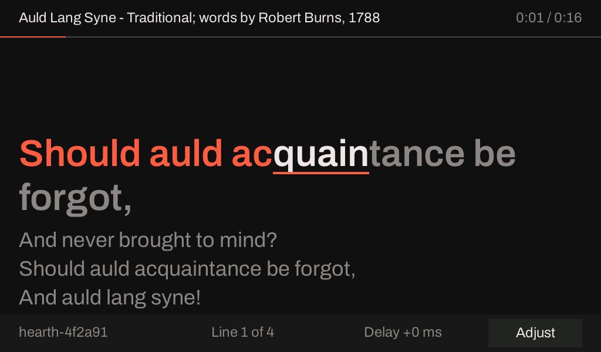
One colour for a word sung, one fill for the word being sung, and one for a word not yet sung, as on
the desktop, with one cue that is not colour (the underline), so that no one has to tell the colours
apart. The picture above and the others on this page are drawn by the firmware's own screen code
(firmware/hearth-sink/main/panel/lvgl/lyric_screen.cpp) and rendered by a tool on a computer
(below).
| Screen | When |
|---|---|
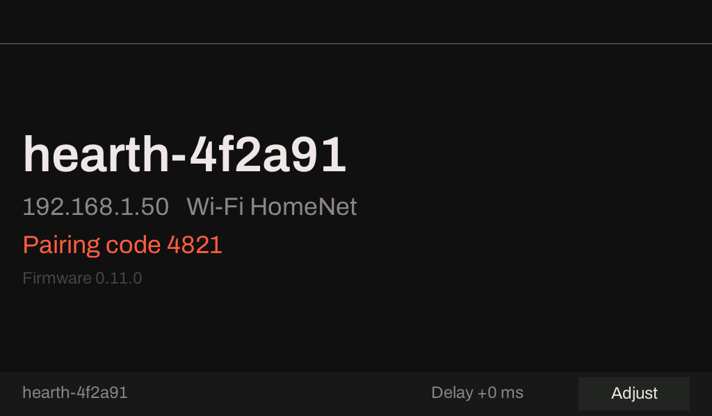 |
Nothing is playing. The board's name, its address and network, and what it waits for; the pairing code while an attempt shows one |
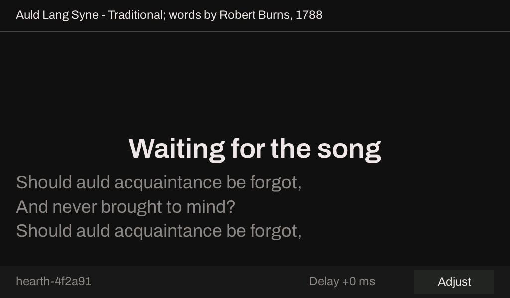 |
The song is held and has not started. The first lines, so a singer sees what is coming |
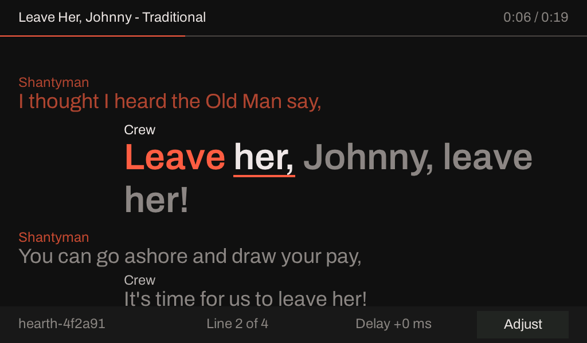 |
A duet. The first singer's lines at the left, the second's indented, each tagged with its name from the file |
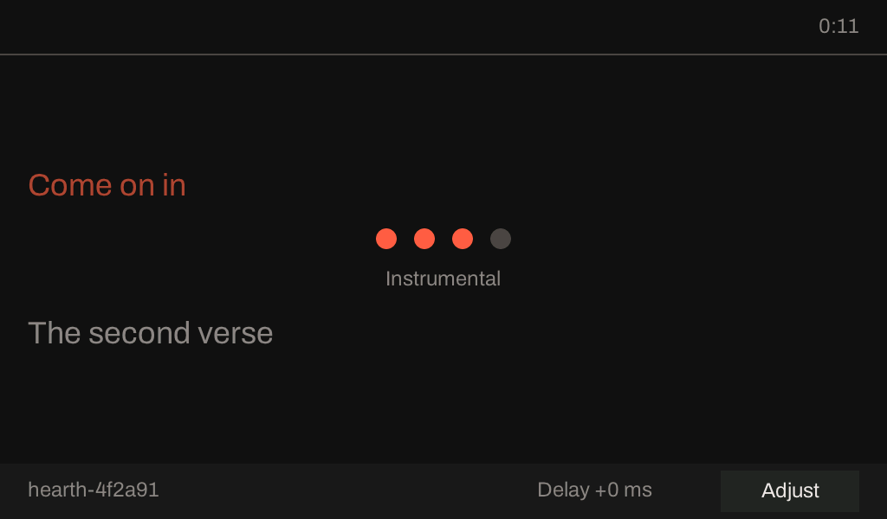 |
An instrumental break of four seconds or more: four dots that go out one a second, so the line's start is seen coming |
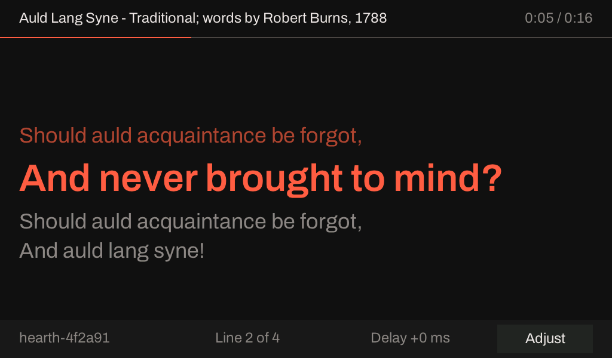 |
A file with line times only. The whole line, emphasised; no word is invented |
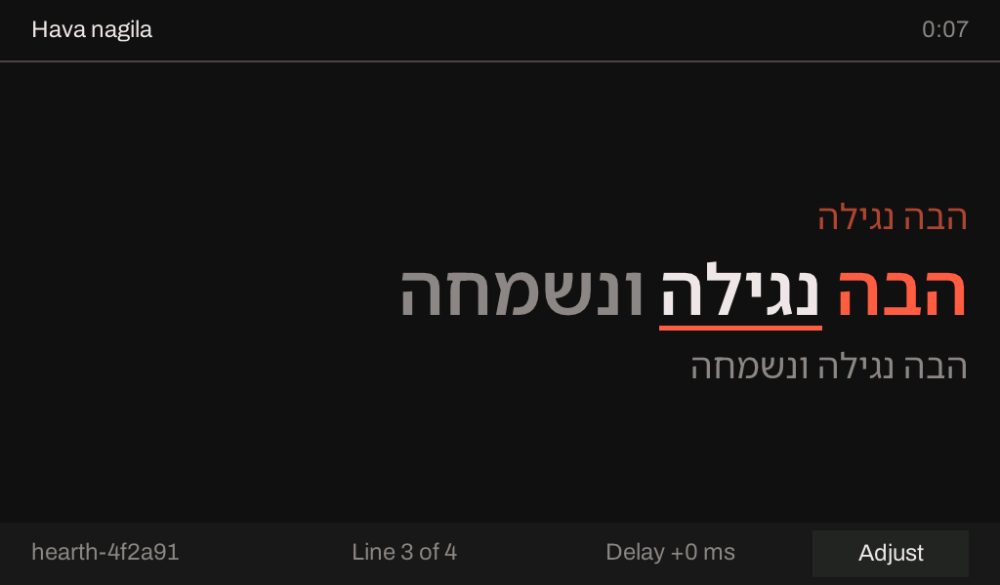 |
Hebrew or Yiddish. Right-aligned, the words flow right to left and the fill runs from a word's right edge |
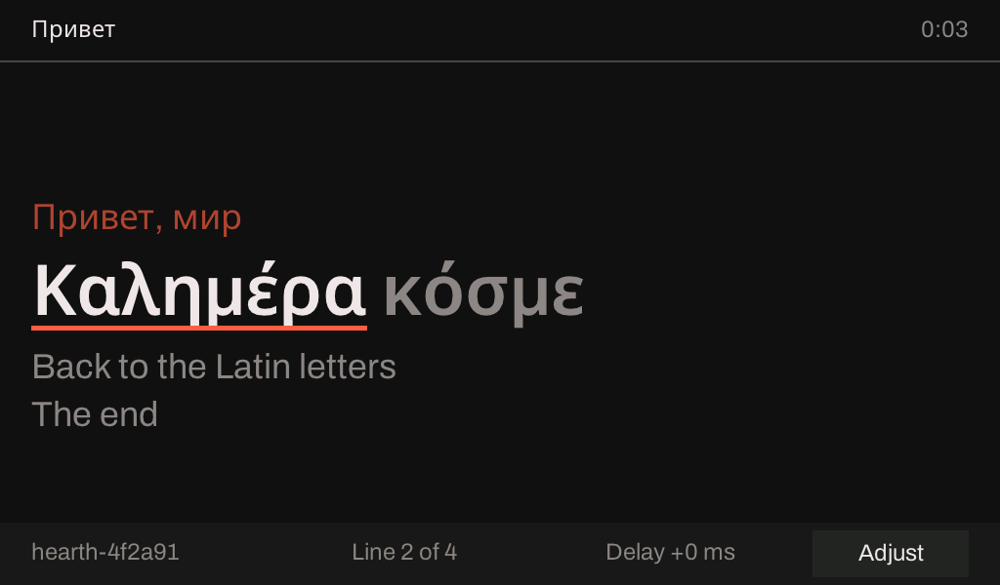 |
Cyrillic or Greek. Drawn as Latin is, in Noto Sans behind Archivo, with the same fill |
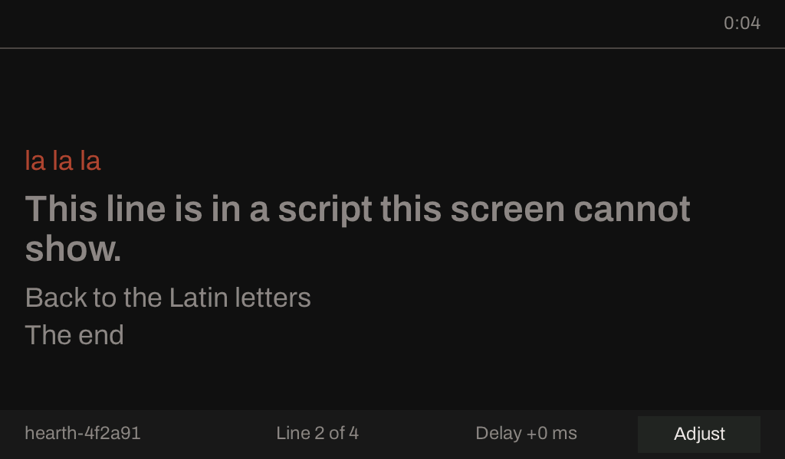 |
A script the fonts cannot draw (Arabic here). One sentence in the line's place; the title in it is left out; a music note is dropped |
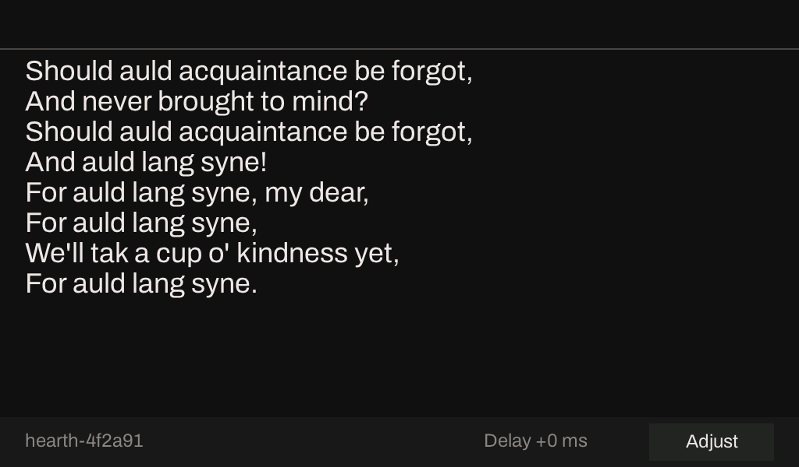 |
A file with no times. The text, scrolled by touch, not followed |
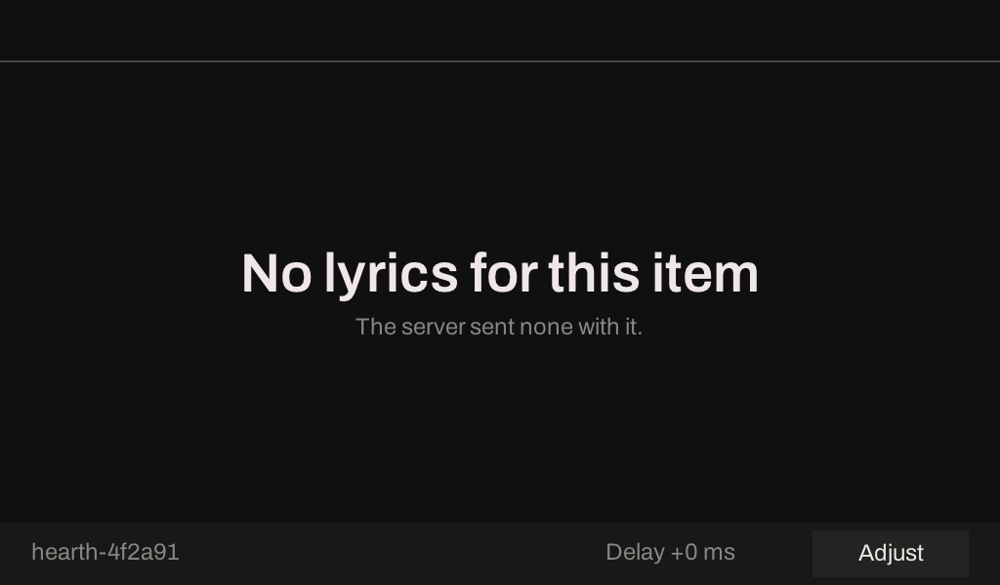 |
Playing, and the server sent no lyrics |
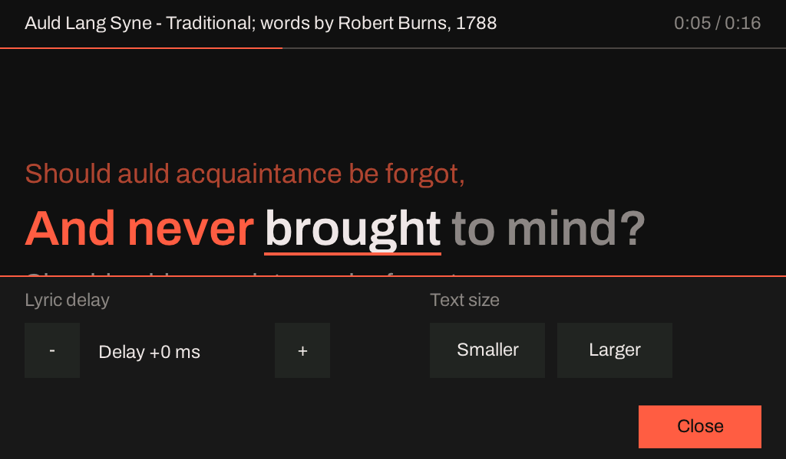 |
Adjust. The lyric delay in 50 ms steps and the text size; put away after eight seconds untouched |
Controls. Touch changes only what the board owns: its lyric delay (±1,000 ms), its text size, and (later) its brightness. Which vocals sound and the reproduction are the server's settings and are shown, not changed, until the role has a way to carry a request back.
Fonts. Archivo, the apps' own, for Latin (Basic, Latin-1 and Extended-A, most of Extended-B and the Vietnamese block, and the punctuation and currency signs a lyric uses); Noto Sans behind it for Greek (modern, with its tonos) and Cyrillic (with its supplement), and Noto Sans Hebrew behind that; all three under the SIL Open Font License, in the image (473 KB of flash, two weights of each). Not in this build: polytonic Greek and the Cyrillic Extended blocks, CJK (a usable face is 5 to 16 MB, which the 4 MB application slots have no room for), Arabic (its shaping is not done by LVGL), and the Indic and Thai scripts. A line in a script the screen cannot draw is replaced by one sentence, "This line is in a script this screen cannot show.", not by the font's missing-glyph boxes; a title in one is left out, and a music note (which none of the fonts has) is dropped from a line.
Wiring¶
All of these are Kconfig (ICLFORGE_EXAMPLE_PANEL_*), and the defaults are the
ESP32-P4X-Function-EV-Board's,
from its user guide and the older board's support header; check them against the schematic of
the board the image is for.
| Signal | Default | |
|---|---|---|
| Panel | EK79007, 1024 by 600, two DSI lanes at 900 Mbit/s | from Espressif's driver |
| DSI PHY supply | LDO channel 3 at 2.5 V | from Espressif's driver |
| Backlight (PWM), panel reset | GPIO26, GPIO27 | the user guide: J1 pins 31 and 38, to the LCD adapter |
| Touch (GT911) | I2C SDA GPIO7, SCL GPIO8; address 0x5D, then 0x14; polled | board header |
| TDM BCLK, WS, DOUT | GPIO20, 21, 22, the FireBeetle defaults | on J1 (pins 13, 11, 12), free in the user guide's table; not yet checked on the bench |
Two things the user guide does not settle, and the first power-on checks: which driver IC the screen has (it links both an EK73217BCGA and an EK79007AD datasheet; this image has the EK79007's driver) and which touch controller (the older board's has a GT911). Secure Download is not supported on a v3.1 chip, and the image never enables it.
Memory and time¶
The screen's own memory is in PSRAM, none in the internal RAM the AC-4 decoder leaves 1 to 11 KB of: the frame buffer (1.2 MB at 16 bits), two render buffers (80 KB each), LVGL's heap and glyph caches, the copies of the lines it shows (the rows, a file's plain text and the title are held in LVGL's heap, not ESP-IDF's, which would try internal RAM first for anything up to 16 KB), and the task's stack. The task runs at priority 2, below the decoder and the I2S writer.
Measured on the v1.3 board with no panel (a FireBeetle 2 at 360 MHz, a synthetic karaoke AC-3 programme decoded to 2.0 over Wi-Fi for 60 s, the screen filling a looping song at 30 fps):
| Screen idle | Screen filling | |
|---|---|---|
| Underruns, late, dropped chunks | 0, 0, 0 | 0, 0, 0 |
| A burst's decode and render, mean | 4.50 ms | 4.58 ms (+1.6 %) |
| A burst, worst | 5.7 to 6.0 ms | 5.8 to 6.2 ms |
| Refreshes a minute | 60 | about 960, 1.7 ms each (2.7 % of one core) |
| A line's rows rebuilt | 28 to 48 ms, once a line |
One of five runs with the screen filling broke some 15 to 20 seconds in (underruns and resyncs, then every chunk late until the stream ended); the three that followed it on the same image did not, and a run with the screen idle had a smaller disturbance of the same kind. The cause was not found, and the screen is neither shown to be it nor shown not to be (the plan's Measured section). Not in these numbers: the DSI engine's own reads of PSRAM (74 MB/s at 60 Hz, on the bus the decoder fetches its code from), and the AC-4 5.1 streams that fill a frame: both are the kit's first measurement.
Developing the screen without a panel¶
Two tools, neither needing the kit.
On a computer. firmware/hearth-sink/preview builds the firmware's lyric screen against LVGL's
software renderer and writes one picture per screen above, in seconds:
cmake -S firmware/hearth-sink/preview -B build-preview -DLVGL_DIR=<firmware/hearth-sink/managed_components/lvgl__lvgl>
cmake --build build-preview
build-preview/panel_preview <output directory>
managed_components/lvgl__lvgl appears after any P4 build of firmware/hearth-sink. It reads the
example songs in examples/karaoke and writes 24-bit BMP files.
On a P4 with no panel (sdkconfig.panel-null): LVGL draws into a frame buffer in PSRAM, and a
second small HTTP server (port 8081, ICLFORGE_EXAMPLE_PANEL_CAPTURE_PORT, 0 for none) serves it:
| Request | Answer |
|---|---|
GET /panel.bmp |
the picture, as a 24-bit BMP |
GET /panel |
what drawing has cost: refreshes, microseconds a refresh, the longest rebuild, late cycles, the task's stack left |
POST /panel/tap?x=..&y=.. |
a tap, for a board with no touch controller |
The same screen code runs on both and on the glass; what the computer and the board with no panel leave out is the glass itself.
Licences¶
The image with a screen carries LVGL (MIT licence, from the component registry, version
9.5), and three typefaces under the SIL Open Font License 1.1: Archivo and Noto Sans Hebrew,
which the apps bundle, and Noto Sans Greek and Cyrillic, which only this image has (the texts
are in firmware/hearth-sink/main/panel/fonts/: OFL.txt, NotoSansHebrew-OFL.txt and
NotoSansGreekCyrillic-OFL.txt). The Hebrew and the Greek and Cyrillic files are static instances
cut from a variable font, which the licence allows for a font with no reserved name.
Where a person reads them: Hearth's About, Licences window, which shows the generated
NOTICES.txt that also ships in each package, names LVGL (notices/fragments/hearth-lvgl.txt) and
all three typefaces (notices/fragments/hearth-fonts.txt) with their copyright lines and the text
of each licence, and, in a section of its own (notices/fragments/hearth-firmware.txt), ESP-IDF and
the third-party components the ESP32 images link (FreeRTOS, lwIP, Mbed TLS, picolibc, HTTP Parser,
argtable3, TLSF, wpa_supplicant, the Xtensa headers, and what LVGL carries: stb_truetype and the
Montserrat font with Font Awesome's symbols), each with its text as its own files state it.
Those texts are notices/licences/ESP-IDF-components.txt, made from an ESP-IDF checkout by
tools/generators/gen_esp_idf_notices.py (a new ESP-IDF means running it again; a test fails
until it is). tools/ci/check_hearth_package.py fails a package whose notices lack any of them.
Forge and Crucible do not ship this firmware or these faces and their licence windows are
unchanged. The firmware images themselves carry no notices file: the notices travel with Hearth.
Related pages¶
- ESP32-P4 platform — the chip revision, decode timing and memory, AC-4
- Karaoke — the stream and the lyrics files the screen shows
- Sink firmware — which image, and updating over the network
- planning/karaoke-p4x-panel.md — the plan, the decisions and the bring-up list